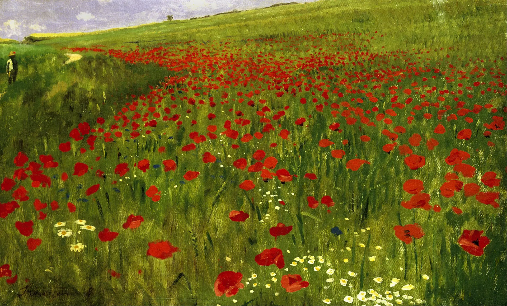

Research and projects
I work between data and policy, to support evidence-based decision-making and innovation. Below are five research and data projects, a company and a nonprofit. Each card links to the full project.

Lines link each project to its themes. Click a project to jump to it.
Measuring Parliamentary Discourse in Hungary, 1990–2026
A reproducible hybrid NLP pipeline for 36 years of Hungarian parliamentary transcripts. It measures personal attacks, access to the floor and breakdowns of order. Rules and an LLM check each other under a seven-case merge protocol.
Advancing a Global Framework for Pandemic Risk Assessment
A scoping review of eleven pandemic risk and preparedness tools, including WHO instruments and Moody’s catastrophe models, plus 27 expert consultations. It ends with twelve design principles for a next-generation assessment.
 60 pp · PDF
60 pp · PDF2026 Environmental Performance Index
The EPI scores 177 countries against established environmental policy targets. The UN and governments worldwide use it. Produced by Yale’s Center for Environmental Law & Policy with Columbia’s CIESIN.
I analyzed climate and trade data in R, Python and SQL. Credited on the 2026 EPI team under Writing, Research and Production.
Sterling Admissions
1:1 mentoring that pairs applicants to top US universities with recent admits from top-15 schools. Mentors help with strategy, essays, activity lists and school selection; students join from anywhere. I applied from Hungary without this kind of guidance.
I built the platform myself: student, mentor and admin portals, mentor payouts and compliance.
LSMS Research Impact Tracker
An automated Python pipeline on the OpenAlex API that counts research using the World Bank’s Living Standards Measurement Study (LSMS) surveys. It finds papers that name an LSMS survey and keeps one only if the survey is a real LSMS survey and the authors used its data. Citations alone do not count.
7,566 of 16,674 retrieved papers confirmed since FY09. 78% are peer-reviewed, 92% open access. It refreshes on a schedule and feeds a public dashboard.
UN E-Government Knowledge Base Data Center
The UN’s public database behind the E-Government Survey. It holds the E-Government Development Index (with its online-service, telecommunications and human-capital components), the E-Participation Index and city-level LOSI scores for all 193 member states, every edition from 2003 to 2024. Users can compare countries and download the data.
At UN DESA I helped build the Data Center. I also measured digital-capacity gaps across 193 countries with an R pipeline. Ministers used the resulting reports and dashboards at the UN High-Level Political Forum.
Startup Maffia
A volunteer-run, non-political association that gave Hungary’s young founders free expert evenings, workshops and introductions. Speakers included the James Webb telescope’s European electronics lead and a US growth operator. The Startup Piknik meetup brought the startup community together.
az űrben Hungarians in Space · HUBHUB · Feb 2022 Startup
Piknik 381 RSVPs · HUB55 · Aug 2021